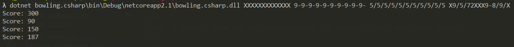

val char : char
--------------------
type char = System.Char
Full name: Microsoft.FSharp.Core.char
static val DBNull : obj
static member ChangeType : value:obj * typeCode:TypeCode -> obj + 3 overloads
static member FromBase64CharArray : inArray:char[] * offset:int * length:int -> byte[]
static member FromBase64String : s:string -> byte[]
static member GetTypeCode : value:obj -> TypeCode
static member IsDBNull : value:obj -> bool
static member ToBase64CharArray : inArray:byte[] * offsetIn:int * length:int * outArray:char[] * offsetOut:int -> int + 1 overload
static member ToBase64String : inArray:byte[] -> string + 3 overloads
static member ToBoolean : value:obj -> bool + 17 overloads
static member ToByte : value:obj -> byte + 18 overloads
...
Full name: System.Convert
(+0 other overloads)
System.Convert.ToInt32(value: string) : int
(+0 other overloads)
System.Convert.ToInt32(value: decimal) : int
(+0 other overloads)
System.Convert.ToInt32(value: float) : int
(+0 other overloads)
System.Convert.ToInt32(value: float32) : int
(+0 other overloads)
System.Convert.ToInt32(value: uint64) : int
(+0 other overloads)
System.Convert.ToInt32(value: int64) : int
(+0 other overloads)
System.Convert.ToInt32(value: int) : int
(+0 other overloads)
System.Convert.ToInt32(value: uint32) : int
(+0 other overloads)
System.Convert.ToInt32(value: uint16) : int
(+0 other overloads)
struct
member CompareTo : value:obj -> int + 1 overload
member Equals : obj:obj -> bool + 1 overload
member GetHashCode : unit -> int
member GetTypeCode : unit -> TypeCode
member ToString : unit -> string + 1 overload
static val MaxValue : char
static val MinValue : char
static member ConvertFromUtf32 : utf32:int -> string
static member ConvertToUtf32 : highSurrogate:char * lowSurrogate:char -> int + 1 overload
static member GetNumericValue : c:char -> float + 1 overload
...
end
Full name: System.Char
System.Char.IsDigit(s: string, index: int) : bool
Full name: Index.parseScore
val char : value:'T -> char (requires member op_Explicit)
Full name: Microsoft.FSharp.Core.Operators.char
--------------------
type char = System.Char
Full name: Microsoft.FSharp.Core.char
Full name: Microsoft.FSharp.Collections.list<_>
val int : value:'T -> int (requires member op_Explicit)
Full name: Microsoft.FSharp.Core.Operators.int
--------------------
type int = int32
Full name: Microsoft.FSharp.Core.int
--------------------
type int<'Measure> = int
Full name: Microsoft.FSharp.Core.int<_>
Full name: Microsoft.FSharp.Core.option<_>
Full name: Index.parseScoreResult
Full name: Index.countScore
Full name: Index.countScoreResult
Full name: Index.sequenceOpts
from Microsoft.FSharp.Core
Full name: Microsoft.FSharp.Core.Option.map
module List
from Microsoft.FSharp.Collections
--------------------
type List<'T> =
| ( [] )
| ( :: ) of Head: 'T * Tail: 'T list
interface IEnumerable
interface IEnumerable<'T>
member GetSlice : startIndex:int option * endIndex:int option -> 'T list
member Head : 'T
member IsEmpty : bool
member Item : index:int -> 'T with get
member Length : int
member Tail : 'T list
static member Cons : head:'T * tail:'T list -> 'T list
static member Empty : 'T list
Full name: Microsoft.FSharp.Collections.List<_>
Full name: Microsoft.FSharp.Collections.List.rev
Full name: Index.oneOption
Full name: Index.bowlingScore
val string : value:'T -> string
Full name: Microsoft.FSharp.Core.Operators.string
--------------------
type string = System.String
Full name: Microsoft.FSharp.Core.string
System.String.ToCharArray(startIndex: int, length: int) : char []
from Microsoft.FSharp.Collections
Full name: Microsoft.FSharp.Collections.Array.toList
Full name: Index.bowlingScoreResult
type EntryPointAttribute =
inherit Attribute
new : unit -> EntryPointAttribute
Full name: Microsoft.FSharp.Core.EntryPointAttribute
--------------------
new : unit -> EntryPointAttribute
Full name: Index.main
Full name: Microsoft.FSharp.Core.ExtraTopLevelOperators.printfn
Full name: Microsoft.FSharp.Core.byref<_>
Full name: Microsoft.FSharp.Core.bool
struct
member CompareTo : value:obj -> int + 1 overload
member Equals : obj:obj -> bool + 1 overload
member GetHashCode : unit -> int
member GetTypeCode : unit -> TypeCode
member ToString : unit -> string + 3 overloads
static val MaxValue : int
static val MinValue : int
static member Parse : s:string -> int + 3 overloads
static member TryParse : s:string * result:int -> bool + 1 overload
end
Full name: System.Int32
System.Int32.TryParse(s: string, style: System.Globalization.NumberStyles, provider: System.IFormatProvider, result: byref<int>) : bool
Full name: Microsoft.FSharp.Core.ExtraTopLevelOperators.dict
type Dictionary<'TKey,'TValue> =
new : unit -> Dictionary<'TKey, 'TValue> + 5 overloads
member Add : key:'TKey * value:'TValue -> unit
member Clear : unit -> unit
member Comparer : IEqualityComparer<'TKey>
member ContainsKey : key:'TKey -> bool
member ContainsValue : value:'TValue -> bool
member Count : int
member GetEnumerator : unit -> Enumerator<'TKey, 'TValue>
member GetObjectData : info:SerializationInfo * context:StreamingContext -> unit
member Item : 'TKey -> 'TValue with get, set
...
nested type Enumerator
nested type KeyCollection
nested type ValueCollection
Full name: System.Collections.Generic.Dictionary<_,_>
--------------------
System.Collections.Generic.Dictionary() : unit
System.Collections.Generic.Dictionary(capacity: int) : unit
System.Collections.Generic.Dictionary(comparer: System.Collections.Generic.IEqualityComparer<'TKey>) : unit
System.Collections.Generic.Dictionary(dictionary: System.Collections.Generic.IDictionary<'TKey,'TValue>) : unit
System.Collections.Generic.Dictionary(capacity: int, comparer: System.Collections.Generic.IEqualityComparer<'TKey>) : unit
System.Collections.Generic.Dictionary(dictionary: System.Collections.Generic.IDictionary<'TKey,'TValue>, comparer: System.Collections.Generic.IEqualityComparer<'TKey>) : unit
System.Collections.Generic.Dictionary(info: System.Runtime.Serialization.SerializationInfo, context: System.Runtime.Serialization.StreamingContext) : unit
member Dispose : unit -> unit
Full name: System.IDisposable
Full name: Index.topRouter
Full name: Index.app
F# CAMP
Writing .NET applications in F#
- Open up new instance of Visual Studio Code
- Let's do it in .NET Core
- Make sure you have fairly recent .NET Core version by typing "dotnet --version". You should see something like "2.1.403"
Agenda
- F# Library (bowling score)
- F# Console app
- F# Test project - NUnit
- C# Console app - integration with F#
- F# Web app - Saturn
F# Library (bowling score)
- Create new folder for your code and inside create new, blank solution called
Bowling - Create new F# library called
Bowlingin the solution
1: 2: 3: 4: 5: 6: |
|
- Open
Bowlingfolder in Visual Studio Code - Open renamed file
Library.fsin editor - Remove generated code from the file, and insert namespace declaration:
1: 2: |
|
- Copy code for
Digitactive pattern recognizer intoBowling.Apimodule indented by 4 whitespaces
1: 2: 3: 4: 5: 6: |
|
- Copy code for
parseScorefunction afterDigit
1: 2: |
|
! Remember to save all changes when manipulating projects in Visual Studio Code (Ctrl + K + S)
Test the code in Interactive
- Select all lines excluding namepspace and module declarations
- Trigger Execute in Interactive by pressing Alt + Enter
- In interactive window, enter following:
1:
|
|
Value of parseScoreResult
|
Exercise
- Extend
Digitactive pattern to recognize '-' character as well, - Rename
DigittoPinsto better reflect its intent after the change, - Refactor
parseScorefunction - make use of the fact thatPinsrecognizes now '-' and remove redundant pattern matching case(s), - In interactive, make sure that after refactoring the code still works.
- Add
countScorefunction
1: 2: 3: |
|
- Test the function in interactive:
1:
|
|
Value of countScoreResult
|
- Add
sequenceOptsfunction
1: 2: 3: 4: 5: 6: 7: 8: 9: 10: 11: |
|
- Test the function in interactive:
1:
|
|
Value of oneOption
|
- Add
bowlingScorefunction
1: 2: 3: 4: 5: 6: |
|
- Test the function in interactive:
1:
|
|
Value of bowlingScoreResult
|
Save & build
1:
|
|
Summary
- Creating F# Library projects in VSC
- Declaring Bowling namespace and module
- Testing code in interactive
Links
- Installing and using F# by Scott Wlaschin
- F# coding conventions
- Organizing functions - Nested functions and modules by Scott Wlaschin
F# Console app
- Create new F# Console Application
Bowling.Consoleand add to solution - Add project reference from
Bowling.ConsoletoBowling - Build "bowling" solution
1: 2: 3: 4: |
|
- Invoke
Bowling.Api.bowlingScoreon example input and print output
1: 2: 3: 4: 5: 6: 7: |
|
- Run it!

Exercise
Invoke Bowling.Api.bowlingScore for each argument from argv (console arguments)
1:
|
|
Hint: Use Array.iter function to perform an action for each element from an array
Summary
- Creating F# console apps
- Printing to console
Links
- Formatted text using printf by Scott Wlaschin
F# Test project - nUnit
- Create new F# Library
Bowling.Tests - Tests are like console applications - must target a platform
1: 2: 3: 4: |
|
- Rename
Library.fstoTests.fs. Don't forget *.fsproj! - Open
Tests.fsand remove boilerplate code and declare top levelBowling.Testsmodule:
1:
|
|
! Save all changes in Visual Studio Code
Paket for managing dependencies
- Create new directory .paket next to the .sln solution file
- Download paket.bootstrapper.exe from here and save it in ".paket" directory
- Rename .paket\paket.bootstrapper.exe to .paket\paket.exe
- In console, change directory to .\Bowling main directory where Bowling.sln is
- Run
paket.exe init:
1: 2: 3: 4: 5: 6: |
|
- Open paket.dependencies in VSC editor,
- add option
storage: noneto mirror NuGet behavior and disable the packages folder and use the global NuGet cache
1: 2: |
|
- Add NUnit, Microsoft.NET.Test.Sdk, Unquote references and place dependency in separate paket group
Tests
1: 2: 3: 4: 5: |
|
- Look inside global paket.dependencies file and project's local paket.references file
- Open
Tests.fssource file in editor, - Add unit test for checking score of 12 Strikes:
1: 2: 3: 4: 5: 6: 7: 8: 9: 10: |
|
1:
|
|

- Fix the test and run it again
- Rewrite the failing test using
Unquotelibrary andquoted expressions
1: 2: 3: 4: |
|
- Fix the test and run it again
Exercises
-
Add three more test cases for following scores using either Unquote or standard assertions:
- "9-9-9-9-9-9-9-9-9-9-"
- "5/5/5/5/5/5/5/5/5/5/5"
- "X9/5/72XXX9-8/9/X"
Demo. REPL driven testing
- Build solution so that there is Bowling.dll
- Use paket to generate load scripts - very helpful!
1:
|
|
- Create
Script.fsxin bowling.test
1: 2: 3: 4: 5: 6: |
|
- Run in VSC (highlight + Alt + Enter ) and in command line
1:
|
|
- Reference file directly for even tighter feedback
1:
|
|
Summary
- Creating test library in F#
- Adding test nuget packages with Paket
- Writing unit tests in F#
- REPL driven testing
Links
- Paket
- Paket and .NET Core
- FsUnit project
- Using F# for testing by Scott Wlaschin
- An introduction to property-based testing by Scott Wlaschin
- Unquote project
C# code integration with F#
- Create new C# Console Application
Bowling.Csharpand add to solution - Add project reference from
Bowling.CsharptoBowling - Build "bowling" solution
1: 2: 3: 4: |
|
- To integrate with F# Option type reference FSharp.Core from C#
1:
|
|
- Replace Program.cs content in
Bowling.Csharpwith the following:
1: 2: 3: 4: 5: 6: 7: 8: 9: 10: 11: 12: 13: 14: 15: 16: 17: 18: 19: 20: |
|
Build and Run it!

The F# Component Design Guidelines
Below snippet doesn't feel nice in C#:
1: 2: 3: 4: |
|
The F# Component Design Guidelines
https://docs.microsoft.com/pl-pl/dotnet/fsharp/style-guide/component-design-guidelines
Use the TryGetValue pattern instead of returning F# option values, and prefer method overloading to taking F# option values as arguments.
This tick can be found in this section of above guidelines.
Exercise
Create new function TryGetBowlingScore in Bowling module for better interop with C#, conforming to the F# Component Design Guidelines.
Use the new function in code behind button click in C#.
Skeleton of the function
1: 2: 3: 4: 5: |
|
New stuff - assign value operator
1: 2: |
|
Using .NET libraries from F#
1: 2: 3: 4: 5: 6: 7: 8: 9: 10: 11: |
|
https://fsharpforfunandprofit.com/posts/completeness-seamless-dotnet-interop/
Summary
- Referencing F# code from C# (FSharp.Core package)
- Conforming to the F# Component Design Guidelines
- Using .NET libraries from F#
Links
F# Web app
- Create new F# Console Application
Bowling.Weband add to solution - Add project reference from
Bowling.WebtoBowling - Add
Saturnframework dependency - Build "bowling" solution
1: 2: 3: 4: 5: |
|
- Open
Program.fsfromBowling.Web, - Remove boilerplater code, and insert following hello world Saturn:
1: 2: 3: 4: 5: 6: 7: 8: 9: 10: 11: 12: 13: 14: 15: 16: 17: 18: 19: 20: 21: |
|
Run it!

Exercise
Implement scoreHandler function similar to helloWorldName so that:
- it responds with 200 OK with score for correct input,
- it responds with 400 BAD REQUEST with "Wrong result" message for wrong input
Hint: Make use of Successful.OK and RequestErrors.BAD_REQUEST functions. Both take generic input.
Remember: .fs files order in project matter!
At first it looks like a limitation but it really turns out to be one of the most beloved F# features
Summary
- Saturn is a web framework, easy to use with F#. Sits on top of ASP.NET Core, Kestrel and Giraffe
- .fs file order inside project matters
Links
- Saturn
- Cyclic dependencies are evil by Scott Wlaschin
Summary
- F# Library (bowling score)
- F# Console app
- F# Test project - NUnit
- C# Console app - integration with F#
- F# Web app - Saturn